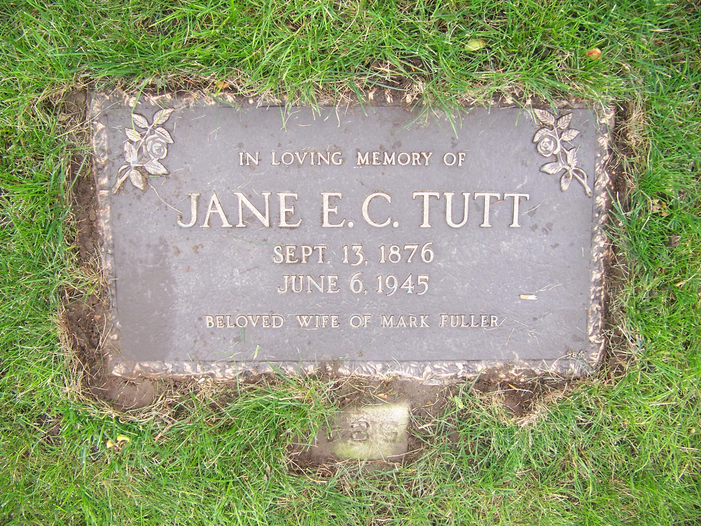

Jane Eliza Caroline Fuller (née Tutt) 1876 - 1945
[ Home ] | [ Calendar ] | [ Surnames Index ] | [ Census Index ] | [ Family History ]A general servant and the child of James Tutt (a general laborer) and Jane Foord (a general shop), Jane Tutt, the first cousin twice-removed on the father's side of Nigel Horne, was born in Margate, Kent, England on Sep 13, 18761,2 and married Mark Fuller (a general laborer with whom she had 5 children: Mark Anthony, Kate Rosaline, James Richard Edmund, Charles Thomas and Elizabeth Rebecca) in St Lawrence, Thanet, Kent, England on Apr 3, 18992.
During her life, she was living at 18 Clarence Terrace, St Lawrence in Thanet on Apr 3, 18815; at Clarence Road, St Lawrence in Thanet on Apr 5, 18914; at 22 Central Road, Ramsgate, Kent on Apr 2, 19113; and at 3 Central Road, Ramsgate, Kent on Jun 19, 19216.
She died on Jun 4, 1945 at 87 Rose Avenue, Toronto, Ontario, Canada and was buried at Prospect Cemetery, Toronto on Jun 7, 1945.
Parents
- James was born on Jan 16, 1851
- Jane was born in Jul 1854
Children
- Mark Anthony was born c. Jun 1899
- Kate Rosaline was born c. May 1900
- James Richard Edmund was born on Sep 12, 1902
- Charles Thomas was born on Jan 7, 1905
- Elizabeth Rebecca was born on Apr 11, 1907
Citations
- England & Wales births 1837-2006 - Findmypast
- Kent, Canterbury Archdeaconry Marriages - Findmypast
- 1911 Census for England & Wales - Findmypast (was age 35 and the wife of the head of the household)
- 1891 England, Wales & Scotland Census - Findmypast (was age 15 and the daughter of the head of the household)
- 1881 England, Wales & Scotland Census - Findmypast (was age 4 and the daughter of the head of the household)
- 1921 Census Of England & Wales - Findmypast (was age 45 and the wife of the head of the household)
Media
Jane Eliza Caroline Tutt - grave

Thanet Advertiser April 8, 1899

England Marriages 1538-1973 - R_848395557/2
England & Wales marriages 1837-2008 - BMD/M/1899/2/AZ/000391/189
England & Wales births 1837-2006 - BMD/B/1876/4/AZ/000561/208
1891 England, Wales & Scotland Census - GBC/1891/0005906042
1911 Census for England & Wales - GBC/1911/RG14/04529/0509/5
1911 Census for England & Wales - GBC/1911/RG14/04529/0509/1
Passenger Lists leaving UK 1890-1960 Image - TNA-BT27-1078-00-0087-P-0005F
1901 England, Wales & Scotland Census - GBC/1901/0007457504
Family Tree

Generated by ged2site. Last updated on Jun 11, 2024